plot_area assigns the total probability
or population frequency to an area (square or rectangle)
and shows the probability or frequency of
4 classification cases (hi, mi,
fa, cr)
as relative proportions of this area.
Usage
plot_area(
prev = num$prev,
sens = num$sens,
mirt = NA,
spec = num$spec,
fart = NA,
N = num$N,
by = "cddc",
p_split = "v",
area = "sq",
scale = "p",
round = TRUE,
sample = FALSE,
sum_w = 0.1,
gaps = c(NA, NA),
f_lbl = "num",
f_lbl_sep = NA,
f_lbl_sum = "num",
f_lbl_hd = "nam",
f_lwd = 0,
p_lbl = NA,
arr_c = -3,
col_p = c(grey(0.15, 0.99), "yellow", "yellow"),
brd_dis = 0.06,
lbl_txt = txt,
main = txt$scen_lbl,
sub = "type",
title_lbl = NULL,
cex_lbl = 0.9,
cex_p_lbl = NA,
col_pal = pal,
mar_notes = FALSE,
...
)Arguments
- prev
The condition's prevalence
prev(i.e., the probability of condition beingTRUE).- sens
The decision's sensitivity
sens(i.e., the conditional probability of a positive decision provided that the condition isTRUE).sensis optional when its complementmirtis provided.- mirt
The decision's miss rate
mirt(i.e., the conditional probability of a negative decision provided that the condition isTRUE).mirtis optional when its complementsensis provided.- spec
The decision's specificity value
spec(i.e., the conditional probability of a negative decision provided that the condition isFALSE).specis optional when its complementfartis provided.- fart
The decision's false alarm rate
fart(i.e., the conditional probability of a positive decision provided that the condition isFALSE).fartis optional when its complementspecis provided.- N
The number of individuals in the population. A suitable value of
Nis computed, if not provided. Note:Nis not represented in the plot, but used for computing frequency informationfreqfrom current probabilitiesprob.- by
A character code specifying 2 perspectives that split the population into subsets, with 6 options:
"cddc": by condition (cd) and by decision (dc) (default);"cdac": by condition (cd) and by accuracy (ac);"dccd": by decision (dc) and by condition (cd);"dcac": by decision (dc) and by accuracy (ac);"accd": by accuracy (ac) and by condition (cd);"acdc": by accuracy (ac) and by decision (dc).
- p_split
Primary perspective for population split, with 2 options:
"v": vertical (default);"h": horizontal.
- area
A character code specifying the shape of the main area, with 2 options:
"sq": main area is scaled to a square (default);"no": no scaling (rectangular area fills plot size).
- scale
Scale probabilities and corresponding area dimensions either by exact probability or by (rounded or non-rounded) frequency, with 2 options:
"p": scale main area dimensions by exact probability (default);"f": re-compute probabilities from (rounded or non-rounded) frequencies and scale main area dimensions by their frequency.
Note:
scalesetting matters for the display of probability values and for area plots with small population sizesNwhenround = TRUE.- round
A Boolean option specifying whether computed frequencies are rounded to integers. Default:
round = TRUE.- sample
Boolean value that determines whether frequency values are sampled from
N, given the probability values ofprev,sens, andspec. Default:sample = FALSE.- sum_w
Border width of 2 perspective summaries (on top and left borders) of main area as a proportion of area size (i.e., in range
0 <= sum_w <= 1). Default:sum_w = .10. Settingsum_w = 0,NA, orNULLremoves summaries; settingsum_w = 1scales summaries to same size as main areas.- gaps
Size of gaps (as binary numeric vector) specifying the width of vertical and horizontal gaps as proportions of area size. Defaults:
gaps = c(.02, .00)forp_split = "v"andgaps = c(.00, .02)forp_split = "h".- f_lbl
Type of label for showing frequency values in 4 main areas, with 6 options:
"def": abbreviated names and frequency values;"abb": abbreviated frequency names only (as specified in code);"nam": names only (as specified inlbl_txt = txt);"num": numeric frequency values only (default);"namnum": names (as specified inlbl_txt = txt) and numeric values;"no": no frequency labels (same forf_lbl = NAorNULL).
- f_lbl_sep
Label separator for main frequencies (used for
f_lbl = "def" OR "namnum"). Usef_lbl_sep = ":\n"to add a line break between name and numeric value. Default:f_lbl_sep = NA(set to" = "or":\n"based onf_lbl).- f_lbl_sum
Type of label for showing frequency values in summary cells, with same 6 options as
f_lbl(above). Default:f_lbl_sum = "num": numeric values only.- f_lbl_hd
Type of label for showing frequency values in header, with same 6 options as
f_lbl(above). Default:f_lbl_hd = "nam": names only (as specified inlbl_txt = txt).- f_lwd
Line width of areas. Default:
f_lwd = 0.- p_lbl
Type of label for showing 3 key probability links and values, with 7 options:
"def": show links and abbreviated names and probability values;"abb": show links and abbreviated probability names;"nam": show links and probability names (as specified in code);"num": show links and numeric probability values;"namnum": show links with names and numeric probability values;"no": show links with no labels;NA: show no labels or links (same forp_lbl = NULL, default).
- arr_c
Arrow code for symbols at ends of probability links (as a numeric value
-3 <= arr_c <= +6), with the following options:-1to-3: points at one/other/both end/s;0: no symbols;+1to+3: V-arrow at one/other/both end/s;+4to+6: T-arrow at one/other/both end/s.
Default:
arr_c = -3(points at both ends).- col_p
Colors of probability links (as vector of 3 colors). Default:
col_p = c(grey(.15, .99), "yellow", "yellow"). (Also consider: "black", "cornsilk", "whitesmoke").- brd_dis
Distance of probability links from area border (as proportion of area width). Default:
brd_dis = .06. Note: Adjust to avoid overlapping labels. Negative values show links outside of main area.- lbl_txt
Default label set for text elements. Default:
lbl_txt = txt.- main
Text label for main plot title. Default:
main = txt$scen_lbl.- sub
Text label for plot subtitle (on 2nd line). Default:
sub = "type"shows information on current plot type.- title_lbl
Deprecated text label for current plot title. Replaced by
main.- cex_lbl
Scaling factor for text labels (frequencies and headers). Default:
cex_lbl = .90.- cex_p_lbl
Scaling factor for text labels (probabilities). Default:
cex_p_lbl = cex_lbl - .05.- col_pal
Color palette. Default:
col_pal = pal.- mar_notes
Boolean option for showing margin notes. Default:
mar_notes = FALSE.- ...
Other (graphical) parameters.
Details
plot_area computes probabilities prob
and frequencies freq
from a sufficient and valid set of 3 essential probabilities
(prev, and
sens or its complement mirt, and
spec or its complement fart)
or existing frequency information freq
and a population size of N individuals.
plot_area generalizes and replaces plot_mosaic.
by removing the dependency on the R packages vcd and grid
and providing many additional options.
See also
plot_mosaic for older (obsolete) version;
plot_tab for plotting table (without scaling area dimensions);
pal contains current color settings;
txt contains current text settings.
Other visualization functions:
plot.riskyr(),
plot_bar(),
plot_crisk(),
plot_curve(),
plot_fnet(),
plot_icons(),
plot_mosaic(),
plot_plane(),
plot_prism(),
plot_tab(),
plot_tree()
Examples
## Basics:
# (1) Using global prob and freq values:
plot_area() # default area plot,
 # same as:
# plot_area(by = "cddc", p_split = "v", area = "sq", scale = "p")
# (2) Providing values:
plot_area(prev = .5, sens = 4/5, spec = 3/5, N = 10)
# same as:
# plot_area(by = "cddc", p_split = "v", area = "sq", scale = "p")
# (2) Providing values:
plot_area(prev = .5, sens = 4/5, spec = 3/5, N = 10)
 # (3) Rounding and sampling:
plot_area(N = 100, prev = 1/3, sens = 2/3, spec = 6/7, area = "hr", round = FALSE)
# (3) Rounding and sampling:
plot_area(N = 100, prev = 1/3, sens = 2/3, spec = 6/7, area = "hr", round = FALSE)
 plot_area(N = 100, prev = 1/3, sens = 2/3, spec = 6/7, area = "hr", sample = TRUE, scale = "freq")
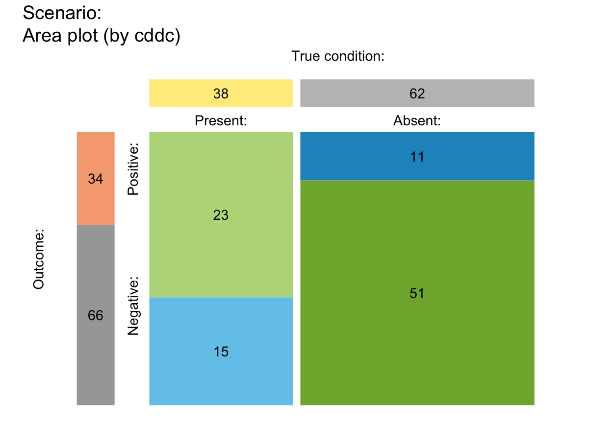
# (4) Custom colors and text:
plot_area(prev = .2, sens = 4/5, spec = 3/5, N = 10,
by = "cddc", p_split = "v", scale = "p",
main = "Custom text and color:",
lbl_txt = txt_org, f_lbl = "namnum",
f_lbl_sep = ":\n", f_lwd = 2, col_pal = pal_rgb)
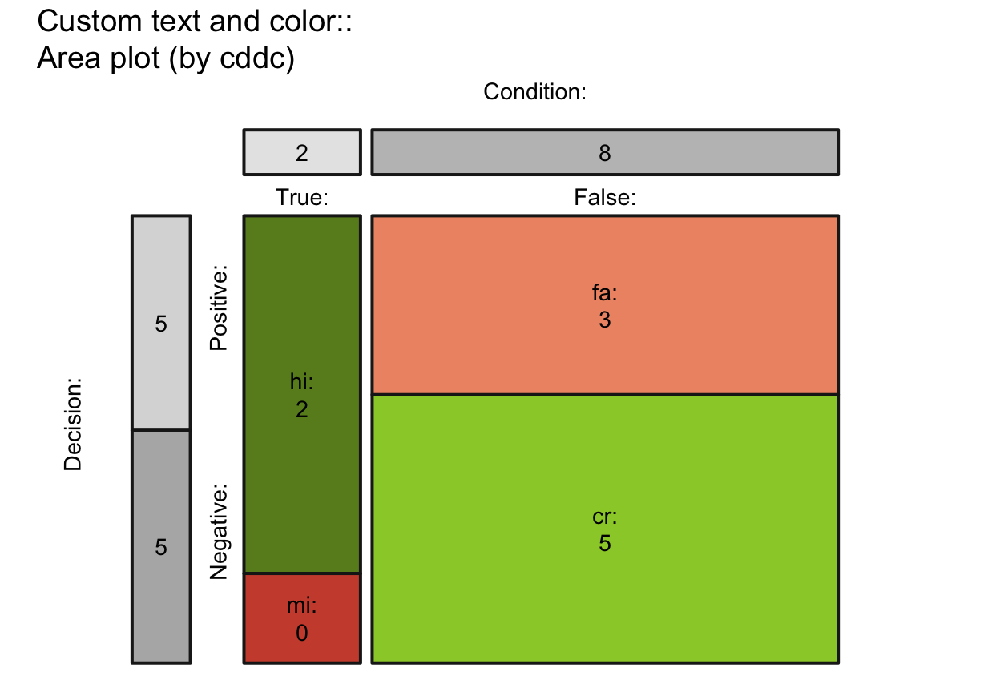
## Versions:
## by x p_split (= [3 x 2 x 2] = 12 versions):
plot_area(by = "cddc", p_split = "v") # v01 (see v07)
plot_area(N = 100, prev = 1/3, sens = 2/3, spec = 6/7, area = "hr", sample = TRUE, scale = "freq")
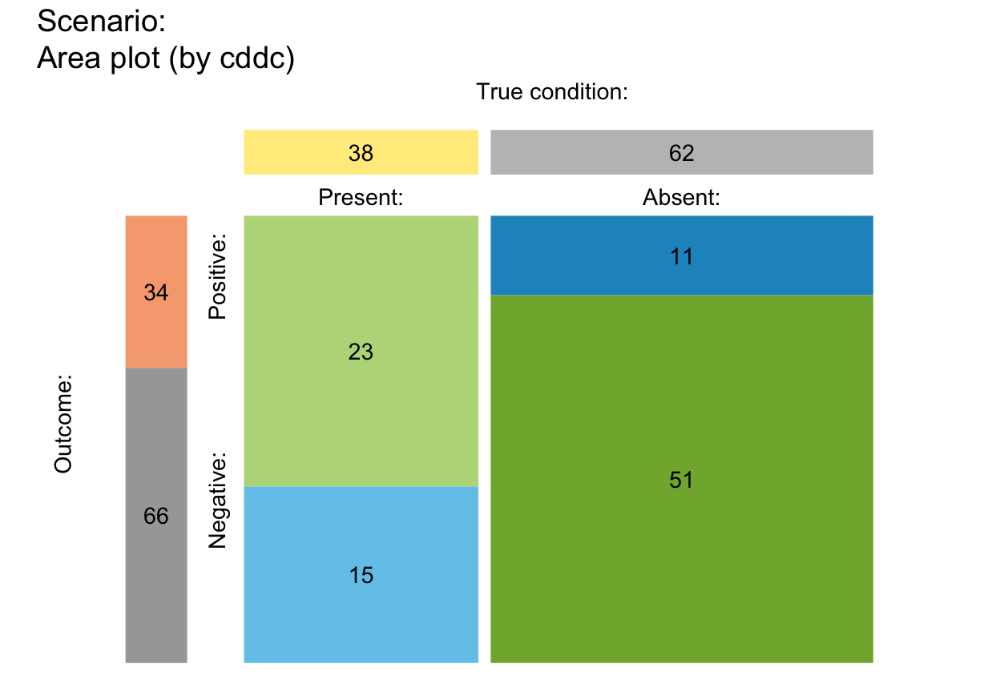
# (4) Custom colors and text:
plot_area(prev = .2, sens = 4/5, spec = 3/5, N = 10,
by = "cddc", p_split = "v", scale = "p",
main = "Custom text and color:",
lbl_txt = txt_org, f_lbl = "namnum",
f_lbl_sep = ":\n", f_lwd = 2, col_pal = pal_rgb)
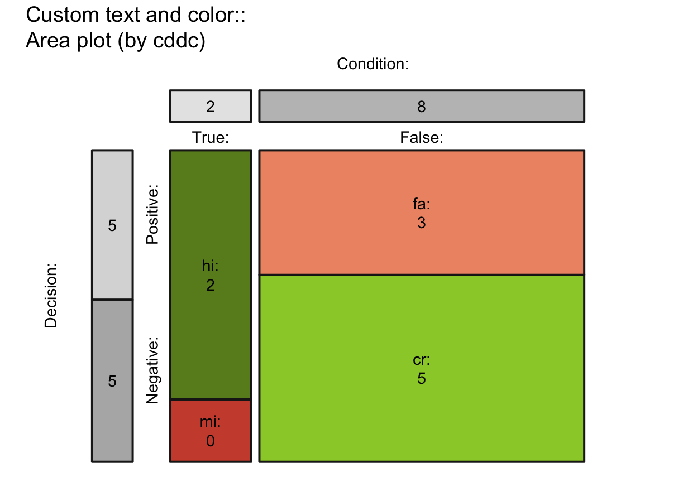
## Versions:
## by x p_split (= [3 x 2 x 2] = 12 versions):
plot_area(by = "cddc", p_split = "v") # v01 (see v07)
 plot_area(by = "cdac", p_split = "v") # v02 (see v11)
# plot_area(by = "cddc", p_split = "h") # v03 (see v05)
# plot_area(by = "cdac", p_split = "h") # v04 (see v09)
# plot_area(by = "dccd", p_split = "v") # v05 (is v03 rotated)
plot_area(by = "dcac", p_split = "v") # v06 (see v12)
# plot_area(by = "dccd", p_split = "h") # v07 (is v01 rotated)
# plot_area(by = "dcac", p_split = "h") # v08 (see v10)
# plot_area(by = "accd", p_split = "v") # v09 (is v04 rotated)
# plot_area(by = "acdc", p_split = "v") # v10 (is v08 rotated)
# plot_area(by = "accd", p_split = "h") # v11 (is v02 rotated)
# plot_area(by = "acdc", p_split = "h") # v12 (is v06 rotated)
## Options:
# area:
plot_area(area = "sq") # main area as square (by scaling x-values)
plot_area(area = "no") # rectangular main area (using full plotting region)
plot_area(by = "cdac", p_split = "v") # v02 (see v11)
# plot_area(by = "cddc", p_split = "h") # v03 (see v05)
# plot_area(by = "cdac", p_split = "h") # v04 (see v09)
# plot_area(by = "dccd", p_split = "v") # v05 (is v03 rotated)
plot_area(by = "dcac", p_split = "v") # v06 (see v12)
# plot_area(by = "dccd", p_split = "h") # v07 (is v01 rotated)
# plot_area(by = "dcac", p_split = "h") # v08 (see v10)
# plot_area(by = "accd", p_split = "v") # v09 (is v04 rotated)
# plot_area(by = "acdc", p_split = "v") # v10 (is v08 rotated)
# plot_area(by = "accd", p_split = "h") # v11 (is v02 rotated)
# plot_area(by = "acdc", p_split = "h") # v12 (is v06 rotated)
## Options:
# area:
plot_area(area = "sq") # main area as square (by scaling x-values)
plot_area(area = "no") # rectangular main area (using full plotting region)
 # scale (matters for small N):
plot_area(N = 5, prev = .5, sens = .8, spec = .6,
by = "cddc", p_split = "v", scale = "p", p_lbl = "def") # scaled by prob (default)
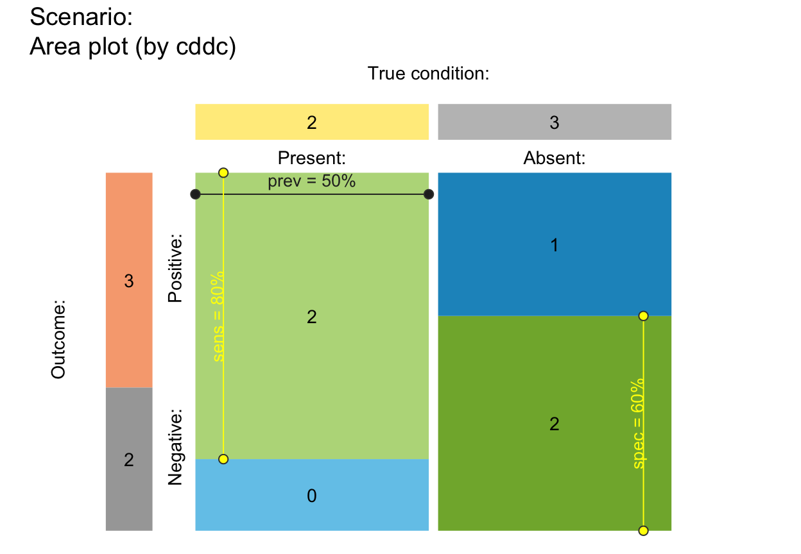
plot_area(N = 5, prev = .5, sens = .8, spec = .6,
by = "cddc", p_split = "v", scale = "f", p_lbl = "def") # scaled by freq (for small N)
plot_area(N = 4, prev = .4, sens = .8, spec = .6,
by = "cdac", p_split = "h", scale = "p", p_lbl = "def") # scaled by prob (default)
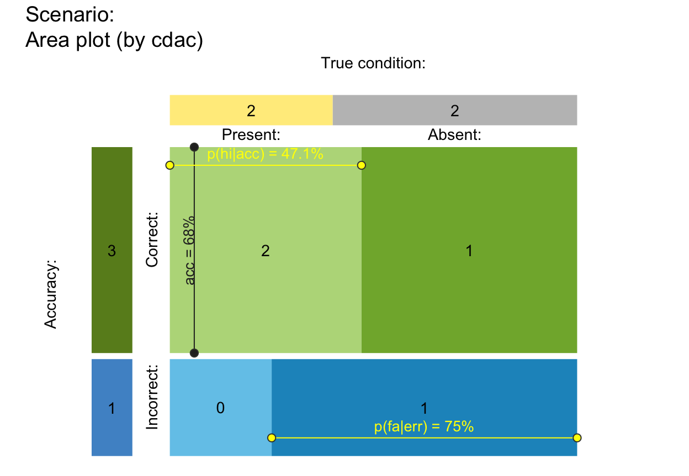
plot_area(N = 4, prev = .4, sens = .8, spec = .6,
by = "cdac", p_split = "h", scale = "f", p_lbl = "def") # scaled by freq (for small N)
# scale (matters for small N):
plot_area(N = 5, prev = .5, sens = .8, spec = .6,
by = "cddc", p_split = "v", scale = "p", p_lbl = "def") # scaled by prob (default)
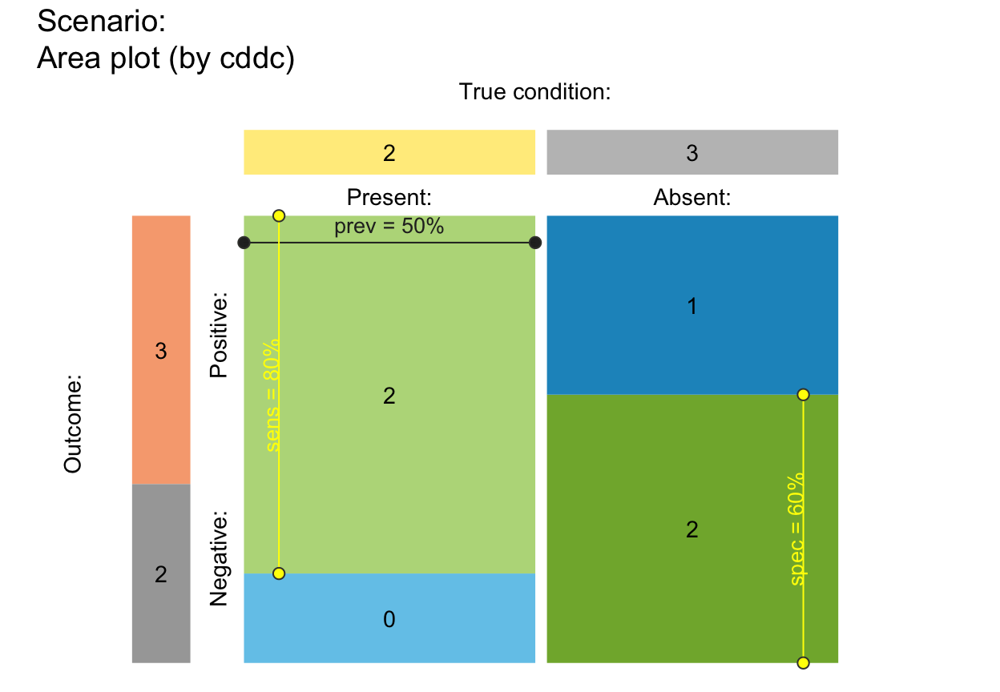
plot_area(N = 5, prev = .5, sens = .8, spec = .6,
by = "cddc", p_split = "v", scale = "f", p_lbl = "def") # scaled by freq (for small N)
plot_area(N = 4, prev = .4, sens = .8, spec = .6,
by = "cdac", p_split = "h", scale = "p", p_lbl = "def") # scaled by prob (default)
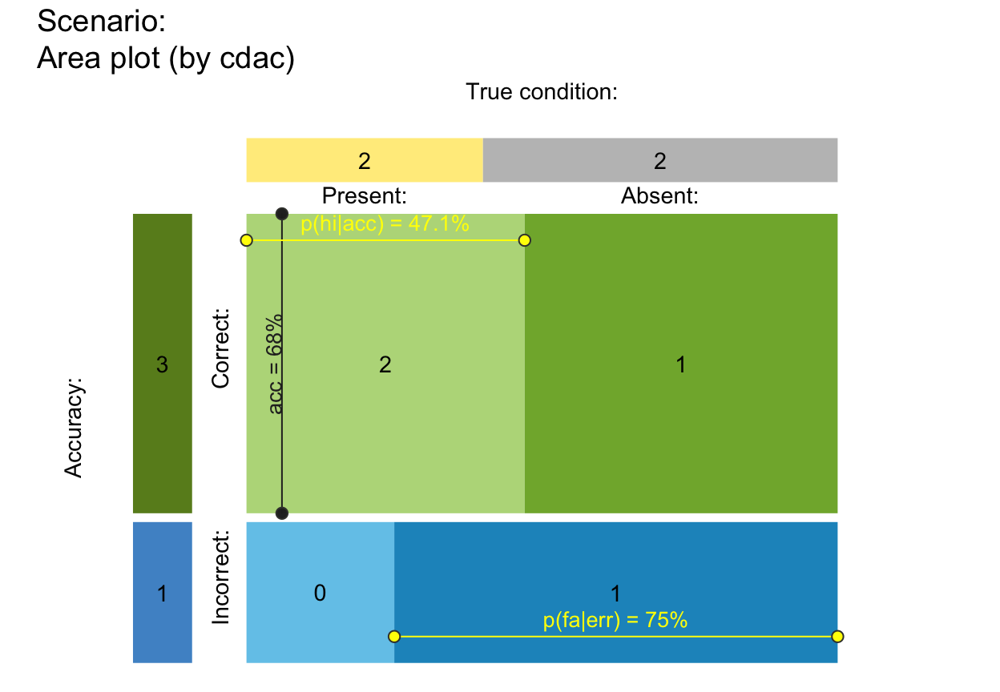
plot_area(N = 4, prev = .4, sens = .8, spec = .6,
by = "cdac", p_split = "h", scale = "f", p_lbl = "def") # scaled by freq (for small N)
 # gaps (sensible range: 0--.10):
plot_area(gaps = NA) # default gaps (based on p_split)
# gaps (sensible range: 0--.10):
plot_area(gaps = NA) # default gaps (based on p_split)
 plot_area(gaps = c(0, 0)) # no gaps
plot_area(gaps = c(0, 0)) # no gaps
 # plot_area(gaps = c(.05, .01)) # v_gap > h_gap
# freq labels:
plot_area(f_lbl = "def", f_lbl_sep = " = ") # default
# plot_area(gaps = c(.05, .01)) # v_gap > h_gap
# freq labels:
plot_area(f_lbl = "def", f_lbl_sep = " = ") # default
 plot_area(f_lbl = NA) # NA/NULL: no freq labels (in main area & top/left boxes)
plot_area(f_lbl = NA) # NA/NULL: no freq labels (in main area & top/left boxes)
 plot_area(f_lbl = "abb") # abbreviated name (i.e., variable name)
# plot_area(f_lbl = "nam") # only freq name
# plot_area(f_lbl = "num") # only freq number
plot_area(f_lbl = "namnum", f_lbl_sep = ":\n", cex_lbl = .75) # explicit & smaller
# prob labels:
plot_area(p_lbl = NA) # default: no prob labels, no links
plot_area(f_lbl = "abb") # abbreviated name (i.e., variable name)
# plot_area(f_lbl = "nam") # only freq name
# plot_area(f_lbl = "num") # only freq number
plot_area(f_lbl = "namnum", f_lbl_sep = ":\n", cex_lbl = .75) # explicit & smaller
# prob labels:
plot_area(p_lbl = NA) # default: no prob labels, no links
 # plot_area(p_lbl = "no") # show links, but no labels
plot_area(p_lbl = "namnum", cex_lbl = .70) # explicit & smaller labels
# plot_area(p_lbl = "no") # show links, but no labels
plot_area(p_lbl = "namnum", cex_lbl = .70) # explicit & smaller labels
 # prob arrows:
plot_area(arr_c = +3, p_lbl = "def", f_lbl = NA) # V-shape arrows
# plot_area(arr_c = +6, p_lbl = "def", f_lbl = NA) # T-shape arrows
# plot_area(arr_c = +6, p_lbl = "def", f_lbl = NA,
# brd_dis = -.02, col_p = c("black")) # adjust arrow type/position
# f_lwd:
plot_area(f_lwd = 3) # thicker lines
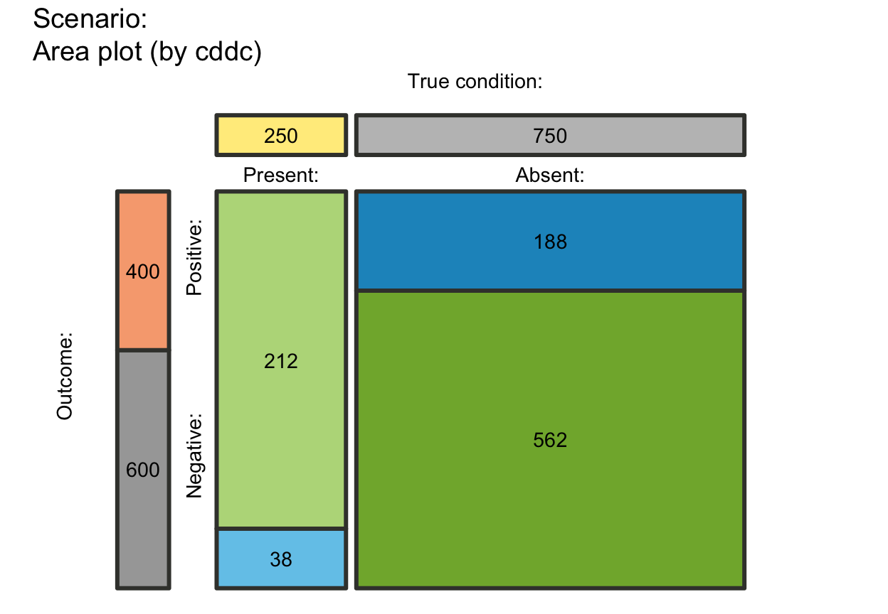
plot_area(f_lwd = .5) # thinner lines
# plot_area(f_lwd = 0) # no lines (if f_lwd = 0/NULL/NA: lty = 0)
# sum_w:
# plot_area(sum_w = .10) # default (showing top and left freq panels & labels)
plot_area(sum_w = 0) # remove top and left freq panels
# prob arrows:
plot_area(arr_c = +3, p_lbl = "def", f_lbl = NA) # V-shape arrows
# plot_area(arr_c = +6, p_lbl = "def", f_lbl = NA) # T-shape arrows
# plot_area(arr_c = +6, p_lbl = "def", f_lbl = NA,
# brd_dis = -.02, col_p = c("black")) # adjust arrow type/position
# f_lwd:
plot_area(f_lwd = 3) # thicker lines
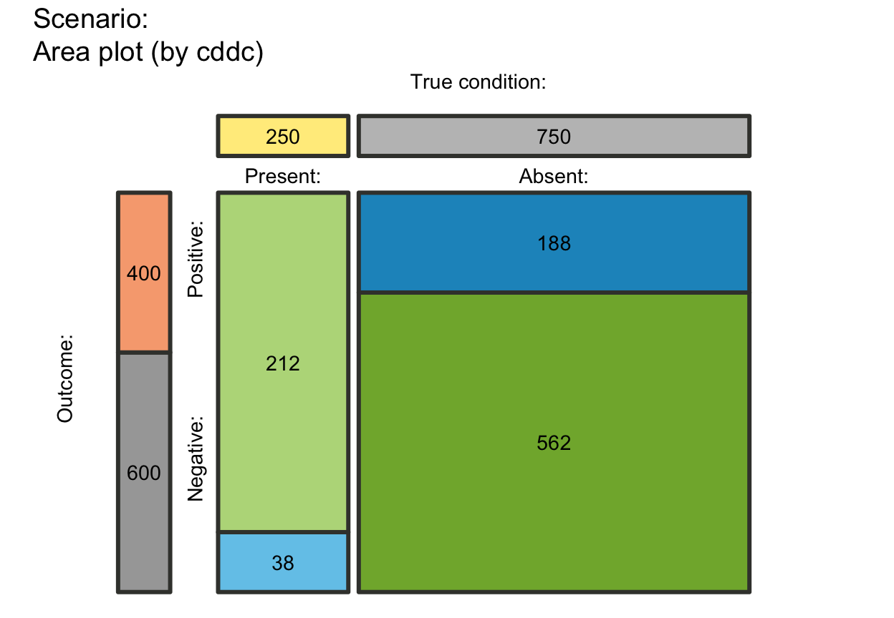
plot_area(f_lwd = .5) # thinner lines
# plot_area(f_lwd = 0) # no lines (if f_lwd = 0/NULL/NA: lty = 0)
# sum_w:
# plot_area(sum_w = .10) # default (showing top and left freq panels & labels)
plot_area(sum_w = 0) # remove top and left freq panels
 plot_area(sum_w = 1, # top and left freq panels scaled to size of main areas
col_pal = pal_org) # custom colors
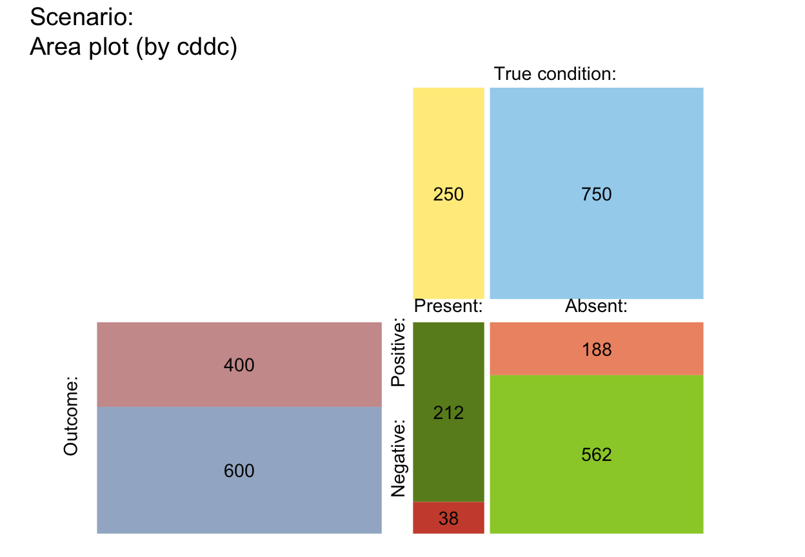
## Plain and suggested plot versions:
plot_area(sum_w = 0, f_lbl = "abb", p_lbl = NA) # no compound indicators (on top/left)
plot_area(gap = c(0, 0), sum_w = 0, f_lbl = "num", p_lbl = "num", # no gaps, numeric labels
f_lwd = .5, col_pal = pal_bw, main = "Black-and-white") # b+w print version
# plot_area(f_lbl = "nam", p_lbl = NA, col_pal = pal_mod) # plot with freq labels
plot_area(f_lbl = "num", p_lbl = NA, col_pal = pal_rgb) # no borders around boxes
plot_area(sum_w = 1, # top and left freq panels scaled to size of main areas
col_pal = pal_org) # custom colors
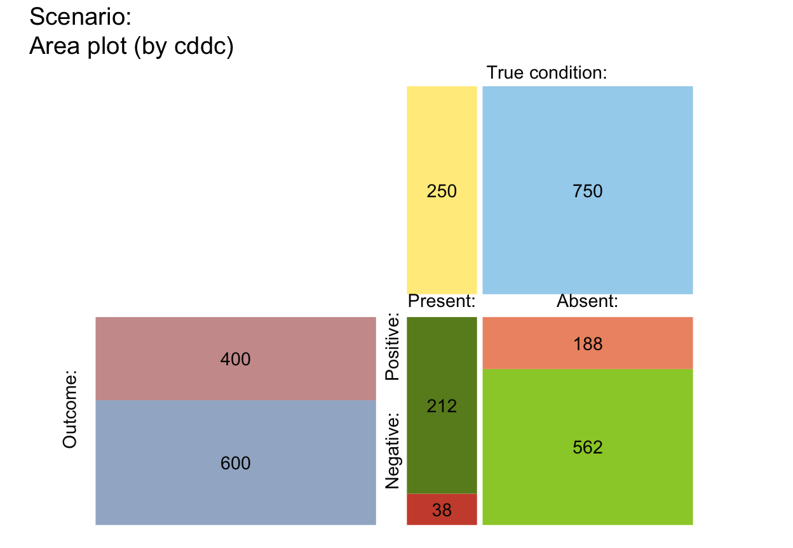
## Plain and suggested plot versions:
plot_area(sum_w = 0, f_lbl = "abb", p_lbl = NA) # no compound indicators (on top/left)
plot_area(gap = c(0, 0), sum_w = 0, f_lbl = "num", p_lbl = "num", # no gaps, numeric labels
f_lwd = .5, col_pal = pal_bw, main = "Black-and-white") # b+w print version
# plot_area(f_lbl = "nam", p_lbl = NA, col_pal = pal_mod) # plot with freq labels
plot_area(f_lbl = "num", p_lbl = NA, col_pal = pal_rgb) # no borders around boxes